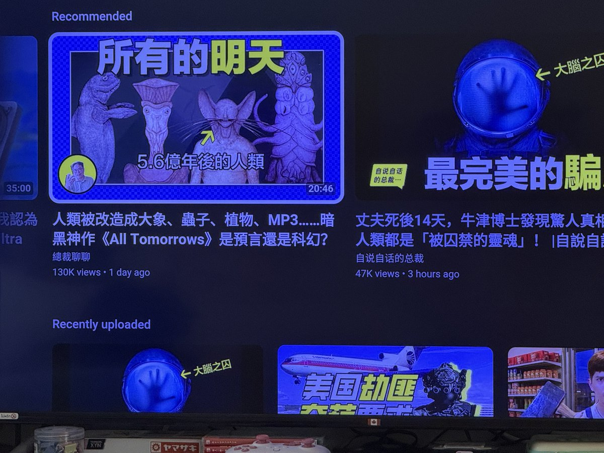

時璃風医詩🌈🏳️🌈
@hagishigure
@ServalCandle 感谢😭。我之前看过这个感觉脑洞太好了想再看一次可是adhd让我忘记了它叫什么。😭
我要翘掉会议去看这个。😋

🌸猫宮すみか🎀
@ServalCandle
总裁也讲这个All Tomorrows了（（（
笨猫以前也看过这个科幻小说，但是怎么也做不到再去看_(:з」∠)_
连这种影片也不想点开…
主要是因为有点绝望恶心和怪怪的感觉
我到现在也忘不了那个人类被改造成肉砖，用来镶嵌在下水道里每天只能吃排泄物过活的未来… https://t.co/0tbstQhI7s